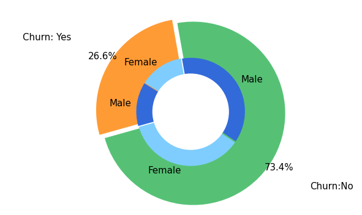
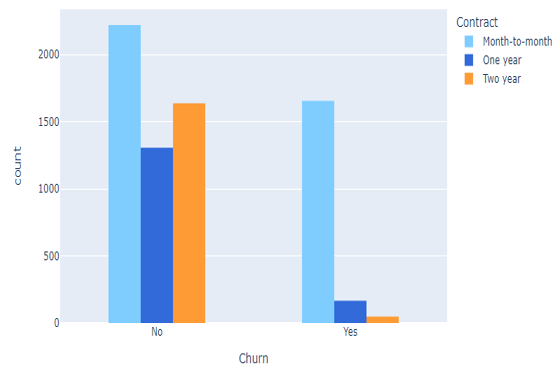
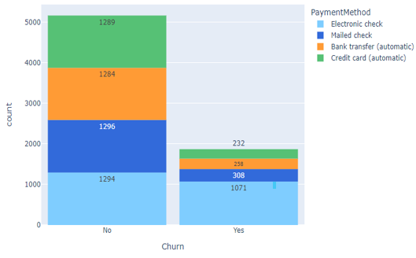
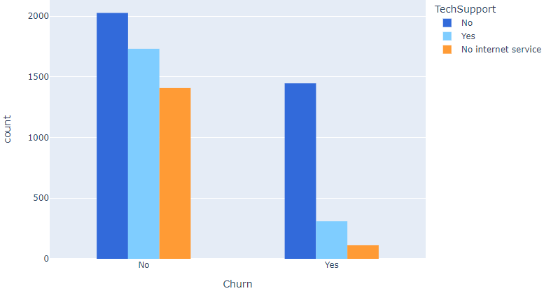
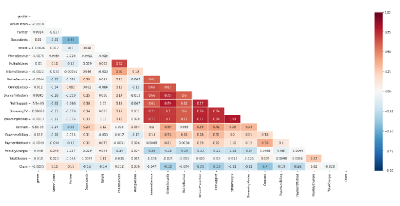
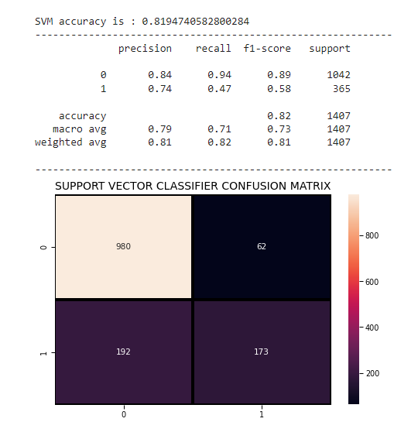
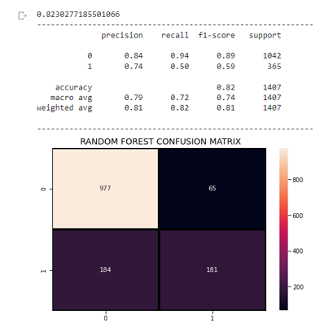
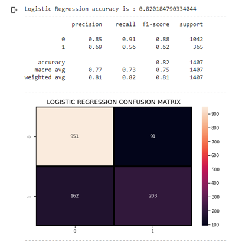
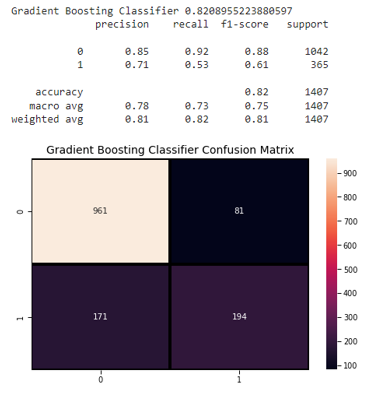

Gender and Churn Distribution
Telecom Customer Churn (Exploratory Data Analysis and Model Buidling)
Customer attrition, commonly referred to as customer churn, is the decision made by a customer to discontinue utilizing a company's goods or services. However, for each client who churns, there are usually early signs or metrics that can be discovered through churn research.Because customers can choose from a range of service providers and actively switch from one to another, the telecom industry experiences a high rate of churn (annual churn rate of 15-25%).
In general, from a business standpoint, acquiring new clients is more expensive than keeping current ones. In fact, a 5% improvement in client retention alone can boost profits by at least 25%. This is due to the fact that returning consumers are likely to spend an additional 60% on a company's goods and services. As a result, the company can spend less on the operating costs of having to attract new consumers by spending time and money encouraging a current customer to choose your company over competitors because they've already made up their mind.
If a business could predict which customers are most likely to depart and why, it could concentrate its customer retention efforts exclusively on these "high risk" clients. This contributes to the company's goal of extending its consumer base and regaining customer loyalty.
Dataset
For the analysis, I have used "Telecom Customer" dataset from kaggle. Each row represents a customer, each column contains customer’s attributes described on the column Metadata. The raw data contains 7043 rows (customers) and 21 columns (features). The “Churn” column is our target.
Results obtained from EDA
Churn distribution with respect to contract type
Churn distribution with respect to Payment Methods
Churn distribution with respect to tech support
Churn distribution with respect to monthly charges
Correlation Matrix
Few Observations from EDA
1. 75% of customer who have Month-to-Month Contract have opted to move out as compared to 13% of customers who have signed One Year Contract and 3% of customers who have signed Two Year Contract.
2. Majority of the customers who moved out were having Electronic Check as Payment Method and others who opted for Credit-Card automatic transfer / Bank Automatic Transfer and Mailed Check as Payment Method were less likely to switch.
3. High Monthly Charges are also one of a reason which makes Customers more likely to churn
4. The absence of online security, Paperless Billing system and services with no TechSupport were the similiar trend are of the customers who are most likely churn.
5. Customers without dependents and customers who have partners are more likely to churn while senior citizens being the most of churn.
6. Customers who opted for DSL service are larger in number and is found to have less churn rate compared to Fibre optic service
7. Fiber optic service which was choosen by a lot of customers and it's evident that there's high churn rate among these customers. This could expose an issue in the Fiber optic service which dissatisfied most of it's customers, further looking into the issue might find a better and apt solution.
8. There's a small fraction of customers who are more likely to churn and it's been found that they don't have a phone service.
Machine learning Model Buidling and their results
Support Vector Machine
Random Forest
Logistic Regression
Gradient Boost
For detailed resutls of analysis and code please visit github from the below link.
View on Github